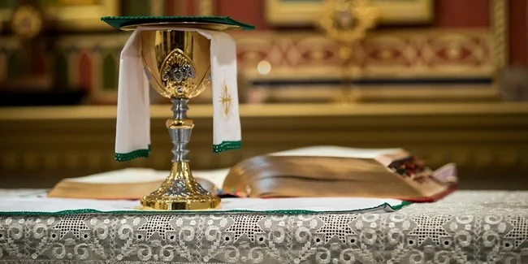

Bronx, New York

St. Angela Merici Catholic Church is a welcoming parish where people of every age and background are invited to deepen their relationship with Jesus Christ. Through the celebration of the Eucharist, the Sacraments, prayer, faith formation, and works of charity, we seek to build a community rooted in the Gospel and united in the love of God.
Founded in 1899, St. Angela Merici Catholic Church has faithfully served the people of the Bronx for more than a century. Through changing times, our parish has remained a place of prayer, worship, and service, welcoming generations of families to encounter Christ through the Eucharist, the Sacraments, and the life of the Church.
St. Angela Merici (1474–1540) was an Italian educator, mystic, and the foundress of the Company of St. Ursula, dedicated to the Christian education and formation of young women. Guided by deep faith, wisdom, and charity, she believed that education rooted in the Gospel could transform both individuals and society. Her example continues to inspire our parish as we seek to grow in faith, hope, and love.